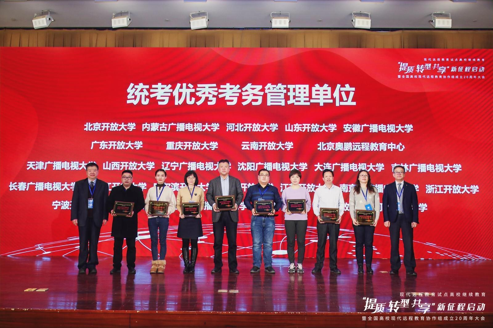

【供稿/远程教育中心】根据全国高校网络教育考试委员会办公室《关于“试点高校网络教育部分公共基础课统一考试评优与表彰工作”评选结果的通知》（网考电函[2020]34号），我校获得试点高校网络教育部分公共基础全国统一考试（2006-2020）统考优秀考务组织管理单位，巴南区电大分校、武隆区电大分校、大足区电大工作站、建筑工程学院获得统考优秀考点。
12月22日-24日，全国高校现代远程教育协作组召开的“提质、转型、共享”新征程启动暨全国高校现代远程教育协作组成立20周年大会在京举行，我校受邀参加本次会议，并在会上接受现场表彰。本次殊荣正值全国高校现代远程教育协作组成立20周年，为进一步发挥我校在线教育优势，建设高质量教育体系夯实基础。
